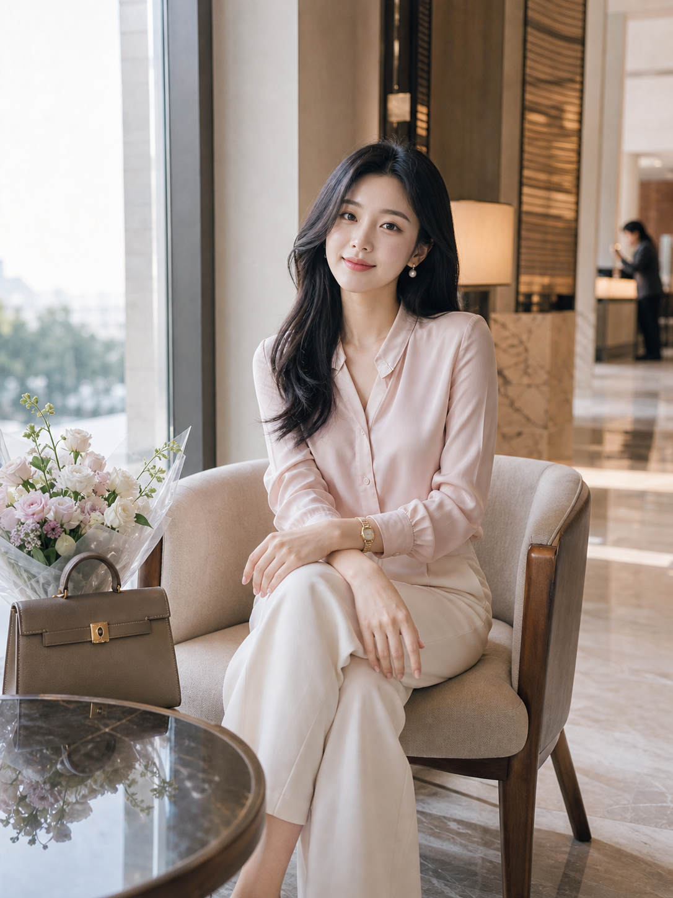
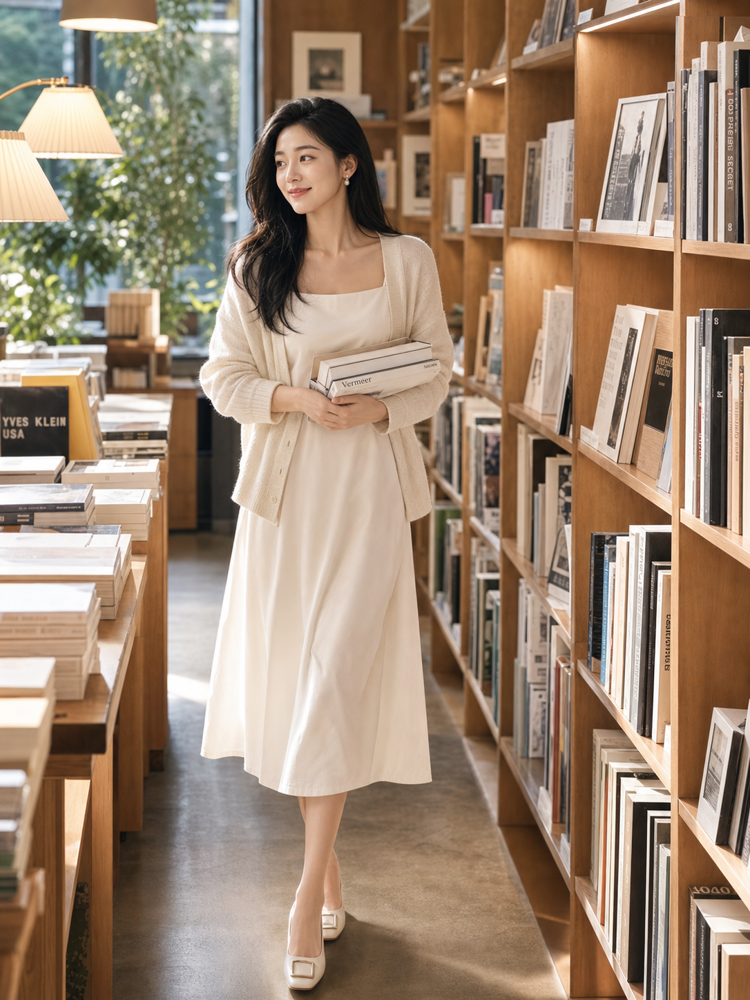
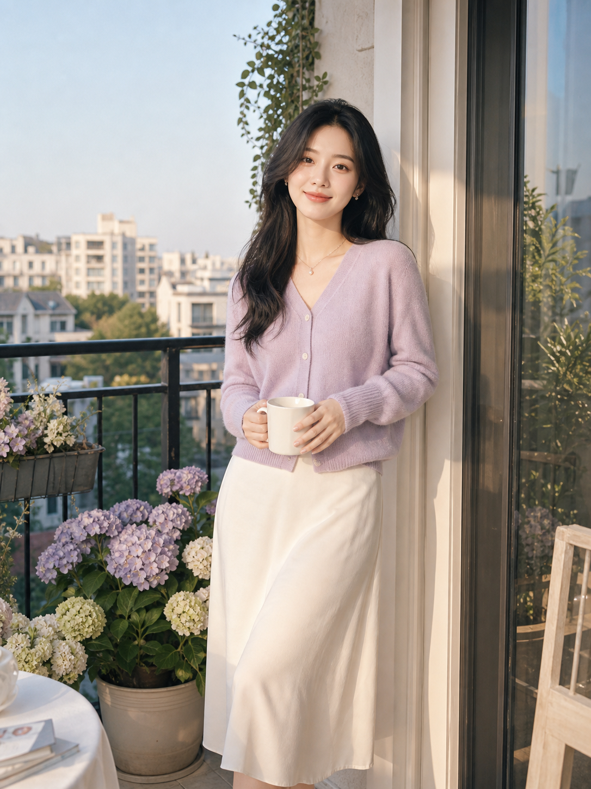
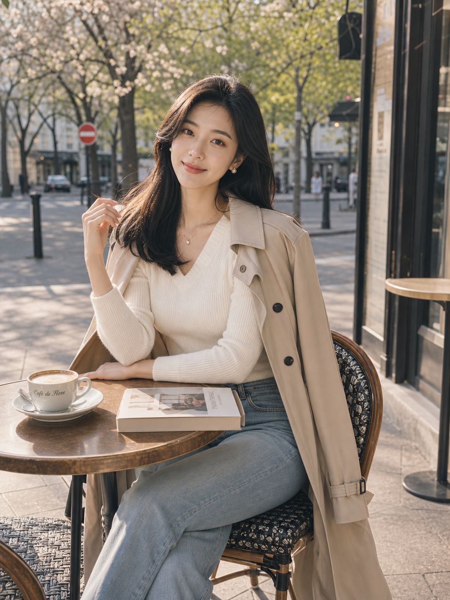
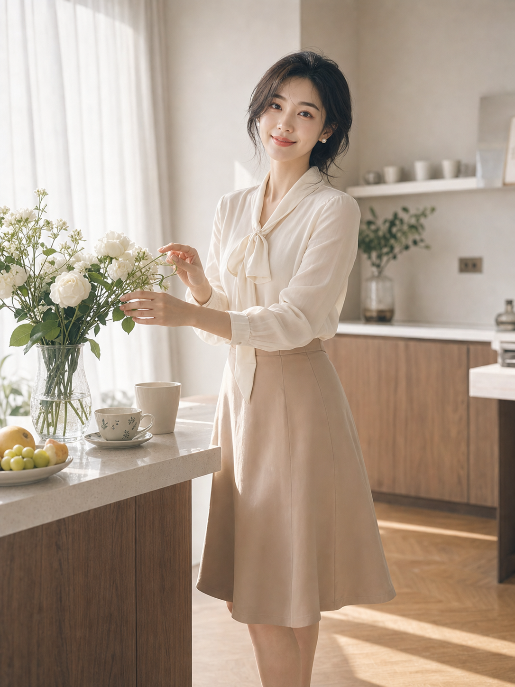
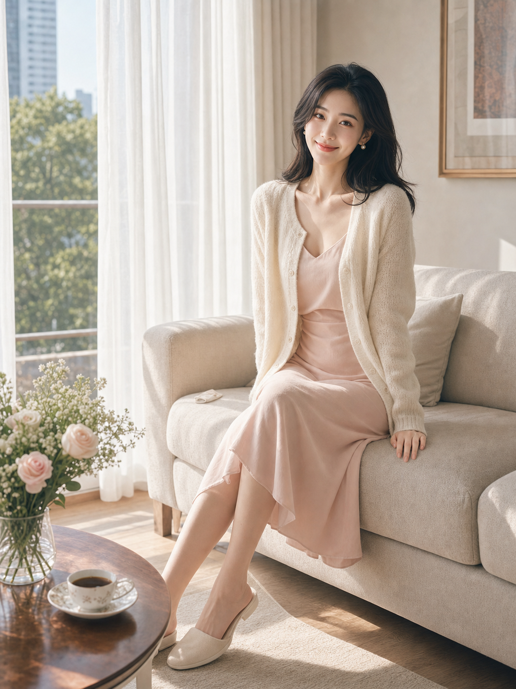

Codex Image2 Portrait Study
糖水摄影师的失业
一次面向小红书竖屏审美的 AI 糖水人像实验：好嫁风、白净柔光、生活方式场景、正常比例和可发布封面感。
返回 Lit-Visual





不是摄影作品替代宣言，而是一次低成本风格验证：当审美被拆成构图、光线、服装、场景和社媒反馈机制，糖水片生产会变成 prompt 工程。
Codex Image2 Portrait Study
一次面向小红书竖屏审美的 AI 糖水人像实验：好嫁风、白净柔光、生活方式场景、正常比例和可发布封面感。
返回 Lit-Visual





不是摄影作品替代宣言，而是一次低成本风格验证：当审美被拆成构图、光线、服装、场景和社媒反馈机制，糖水片生产会变成 prompt 工程。